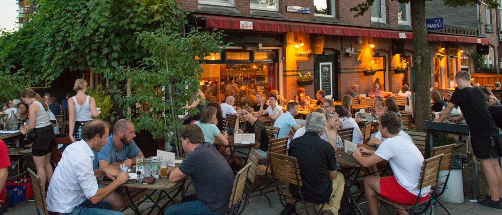
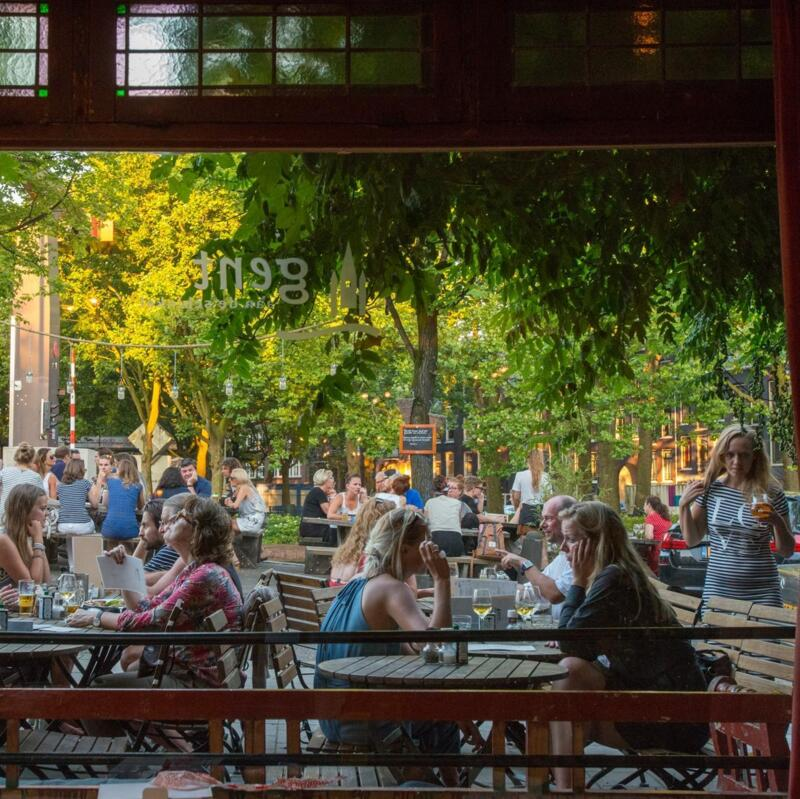
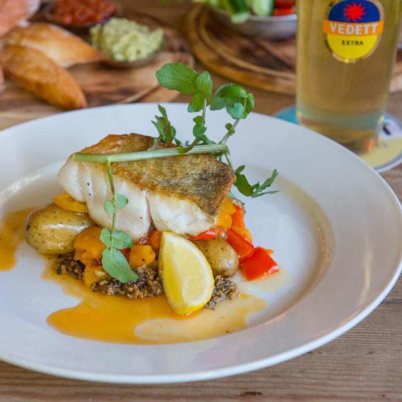
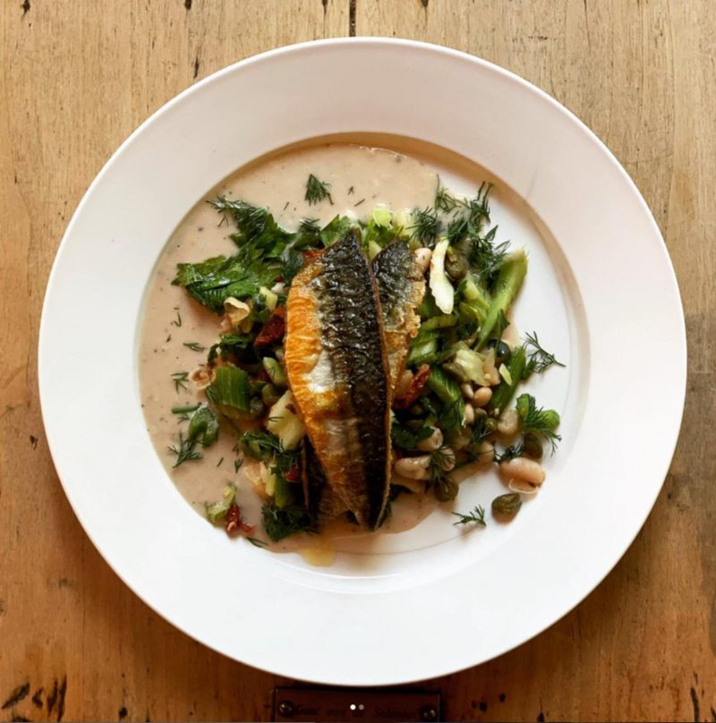
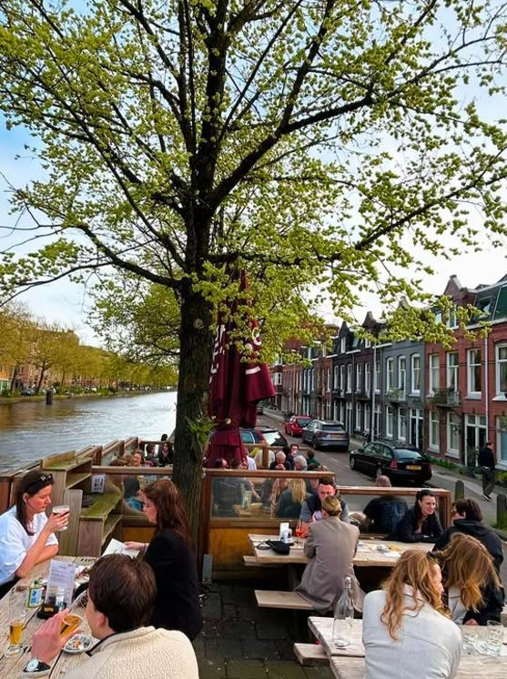
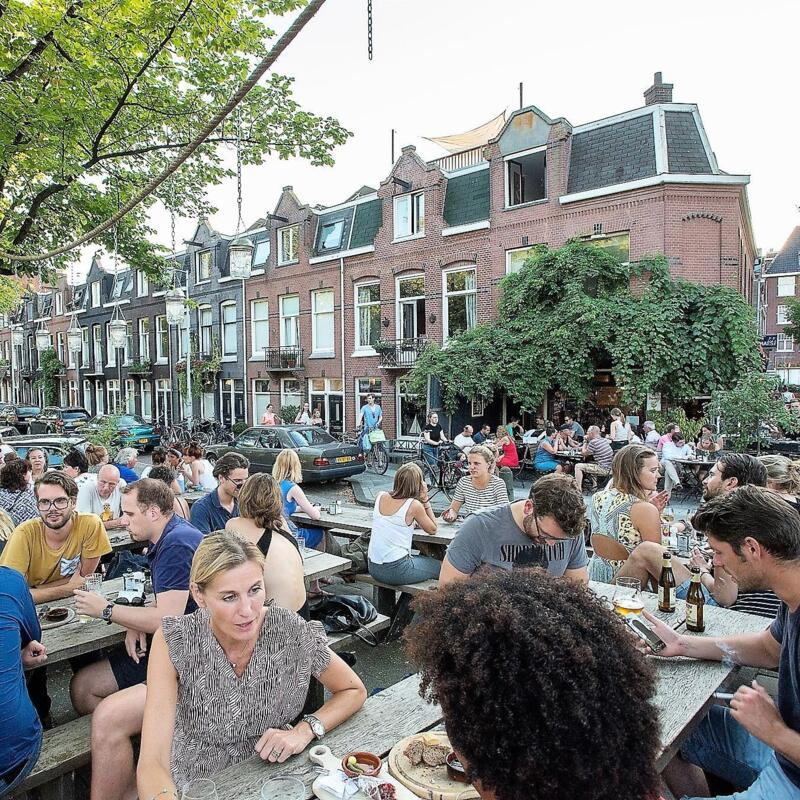
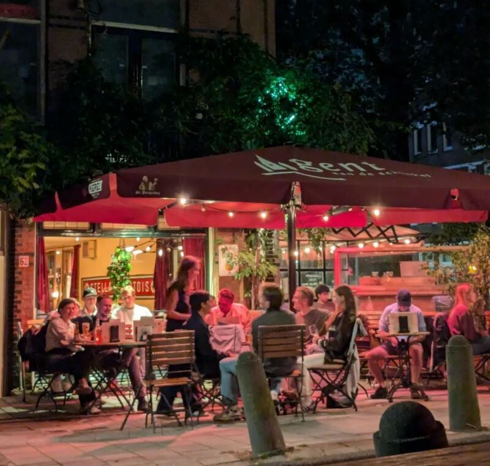
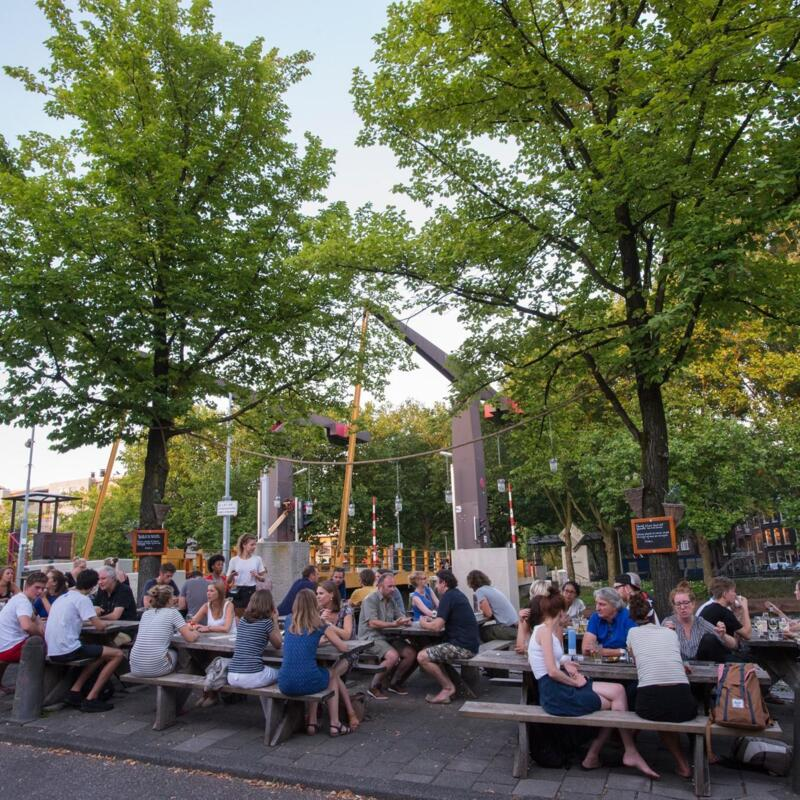
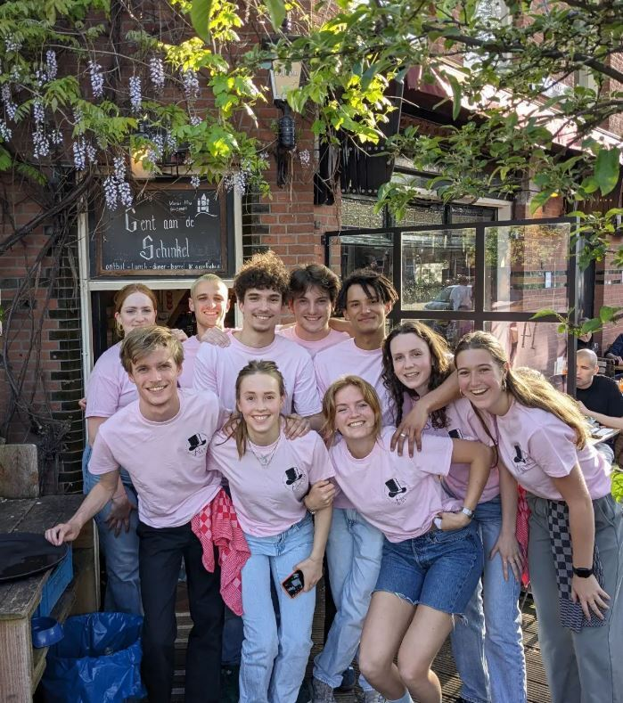

Belgisch café & terras
gentaan de schinkel
Belgische bieren, top wijnen en lekker eten in een ongedwongen sfeer. Achter het Vondelpark, aan het water.
Elke dag open vanaf 10.00 uur
Lekker gemoedelijk, zoals je dat van Gent gewend bent
Achter het Vondelpark, even over de Amstelveenseweg en de Schinkel, vind je café restaurant Gent aan de Schinkel. Een gezellig café waar je vanaf 10 uur al lekker kunt eten.
Of je nu wilt ontbijten, lunchen of dineren in een informele sfeer, of wilt komen borrelen met een Belgisch trappistenbier en garnalenkroketjes met uitzicht op de boten in de Schinkel: bij Gent aan de Schinkel kan het.
- Aan de barvoor een biertje van de tap of uit de koelkast
- In het knusse restaurantreserveren kan, tot 8 personen
- Op het terraszonnig en verwarmd, gewoon komen aanwaaien

Menu
Een per seizoen wisselende dinerkaart, dagspecials en heerlijke lunches. Prijzen in euro.
Ontbijt tot 12.00
- Croissant met jam4,5
- Cruesli met noten, kokos, gojibessen, Griekse yoghurt, banaan en blauwe bessen8,5
- Spelt-banaan pannenkoekjes met blauwe bessen en stroop met spek 11,59,5
- Roerei met spek, tomaat en toast13,5
- Roerei met paddenstoelen, parmezaan en toast15,5
- Roerei met gerookte zalm en toast17,5
Lunch tot 16.00
- Zoete aardappel-linzensoep met breekbrood14,5
- Hummus met gegrilde aubergine, paprika, sumak en pita14,5
- Burrata met paddenstoelen, lavaspesto en breekbrood17,5
- Uitsmijter met ham, kaas en tomaat14,5
- Belgische paté van konijn met in bier gestoofde zilveruitjes en breekbrood15,5
- Paddenstoelen met cannellinibonenspread op toast15,5
- Tuna Melt met Piment d’Espelette-ketchup, Taggiasche olijven en chips15,5
- Reuben sandwich met pastrami, kaas, zuurkool, Russian dressing en chips18,5
- Gerookte zalm met venkelsalade op toast19,5
- Vitello tonnato met rucola, kappertjes en breekbrood19,5
- Ossenworst met spek, Worcester mayo en gekarameliseerde ui op toast17,5
- Drie kalfskroketjes (Holtkamp) met mosterd en toast15,5
- Drie garnalenkroketjes (Holtkamp) met gefrituurde peterselie, crème fraîche en toast19,5
- Hartige taart met blauwe kaas, broccoli en salade20,5
- Caesarsalade met kip suprême, croutons, ei, ansjovis en parmezaan zonder kip 16,524,5
- Gekonfijte eendenbout met groene linzen, aardappelgratin en salade26,5
- Simmentaler rib-eye met rodewijnjus, friet en salade29,5
- Peper-tonijnsteak met misoboter, friet en salade26,5
- Gentse waterzooi. Klassieke romige visstoof met zalm, kabeljauw, gamba’s, mosselen, kervel, aardappel en salade26,5
- Vegan burger met vegan cheddar, augurk, gekarameliseerde ui en friet20,5
- Hamburger met cheddar, bacon, augurk, gekarameliseerde ui en friet22,5
- Belgisch plankje met twee garnalenkroketjes, paté van konijn, Chimay en Père Joseph kloosterkaas, gedroogde worst en breekbrood35
Diner tot 22.00
Voorgerechten
- Zoete aardappel-linzensoep met breekbrood14,5
- Hummus met gegrilde aubergine, paprika, sumak en pita14,5
- Burrata met paddenstoelen, lavaspesto en breekbrood16,5
- Venkelsalade met gerookte zalm van Frank’s smokehouse17,5
- Belgische paté van konijn met in bier gestoofde zilveruitjes en breekbrood14,5
- Vitello tonnato met rucola en kappertjes18,5
- Belgisch plankje met twee garnalenkroketjes, paté van konijn, Chimay en Père Joseph kloosterkaas, gedroogde worst en breekbrood35
Hoofdgerechten
- Hartige taart met blauwe kaas, broccoli en salade20,5
- Caesarsalade met kip suprême, croutons, ei, ansjovis en parmezaan zonder kip 16,524,5
- Gekonfijte eendenbout met groene linzen, aardappelgratin en salade26,5
- Simmentaler rib-eye met rodewijnjus, friet en salade29,5
- Peper-tonijnsteak met misoboter, friet en salade26,5
- Gentse waterzooi. Klassieke romige visstoof met zalm, kabeljauw, gamba’s, mosselen, kervel, aardappel en salade26,5
- Vegan burger met vegan cheddar, augurk, gekarameliseerde ui en friet20,5
- Hamburger met cheddar, bacon, augurk, gekarameliseerde ui en friet22,5
Supplementen
- Friet6,5
- Gemengde salade6,5
- Breekbrood met paprika-aioli6,5
Voor wisselende specialiteiten: vraag de bediening of check het krijtbord.
Borrelhappen tot laat
- Notenmix6,5
- Breekbrood met paprika-aioli6,5
- Olijven6
- Ossenworst met mosterd13,5
- Gedroogd worstje9,5
- Kloosterkaasplankje met Chimay en Père Joseph17,5
- Gents borrelgarnituur 4 bitterballen, 4 kaastengels, 4 stokviskroketjes en rabas de calamar22,5
- Nachos met cheddar, guacamole, crème fraîche en salsa13,5
- Friet6,5
- Stokviskroketjes 5 stuks9
- Rabas de calamar9
- Bitterballen 6 stuks9
- Vegan bitterballen 6 stuks9
- Kaastengels 6 stuks9
- Holtkamp kalfskroketjes 3 stuks13,5
- Holtkamp garnalenkroketjes 3 stuks15,5
Dessert
- Appeltaart van Holtkamp met slagroom8
- Citroen-meringuetaart van Holtkamp9
- Cheesecake van Holtkamp9
- Vegan chocoladetaart van Holtkamp9
- Gentse koffie met vanille-ijs, slagroom & puntje oude jenever zonder jenever 7,59,5
Heeft u een vraag over de samenstelling van een product? Heeft u een allergie? Laat het ons weten, we helpen u graag!


Duurzaam ondernemen gaat ons allemaal aan
Daarom werkt Gent aan de Schinkel met een aantal lokale ondernemers met lokale producten, zoals Wild van Wild. Verder gebruiken we 100% groene energie van Greenchoice.
Met het Earthwater mineraalwater dat we schenken steun je het waterfonds van de VN, maar het liefst drink je natuurlijk puur en gezond kraanwater, dat wij onbeperkt gratis schenken.
Craft beer, Belgisch en lokaal
Naast de vaste bierkaart heeft Gent aan de Schinkel altijd wisselende bieren. Naast Belgische bieren serveren we ook lokale bieren. Het maakt eigenlijk niet uit waar ze vandaan komen: het draait om craft! We streven ernaar dat jij bij elk bezoek weer nieuw bier kan proeven.
Er staan bieren in de koelkast die je misschien regelmatig drinkt, maar er zijn ook bieren voor de self proclaimed beergeek en fijnproever. Dit is mega suf om te zeggen, maar we doen het toch: we hebben voor ieder wat wils. Cheers!
Belgische bieren
- Antwerpse Brouw Compagnie Eilandje6,5
- Artevelde Grand Cru6,9
- Blanche de Namur6,3
- Boon Oude Geuze6,7
- Brasserie d’Achouffe Houblon Chouffe6,9
- Brasserie Dupont Monk’s Stout6,5
- Brasserie d’Orval Orval6,7
- Brouwerij Roman Gentse Strop6,5
- Brouwerij van Steenberge Gentse Tripel6,7
- Brussels Beer Project Delta IPA6,7
- Chimay Rood6,7
- De Halve Maan Brugse Zot Dubbel6,7
- Delirium Argentum6,7
- De Koninck Tripel d’Anvers6,7
- Dochter van de Korenaar Belle Fleur6,5
- Dochter van de Korenaar Noblesse VSOP7,9
- Dok Brewing Waar is Loca6,7
- Gentse Stadsbrouwerij Gruut Amber6,7
- Gentse Stadsbrouwerij Gruut Blond6,5
- Huyghe Averbode6,7
- Lindemans Kriek6,3
- Pauwel Kwak6,7
- St. Bernardus Abt 126,9
- St-Feuillien Grisette (bio & glutenvrij)6,3
- Stella Artois5,3
- Van Honsebrouck Kasteel Rouge6,7
- Westmalle Tripel6,9
Van de tap
- Brand3,8 / 4 / 7,8
- St. Bernardus Wit6,1
- Jack’s Precious6,3
- Affligem6,7
- Filou6,5
- Wisseltap6,5
Lokale bieren
- Eeuwige Jeugd Belhamel6,5
- Gebrouwen door Vrouwen Bloesem Blond6,5
- Homeland Lorre6,7
- Oedipus Mannenliefde6,7
- Two Chefs Brewing Funky Falcon6,5
- Walhalla Mist Weizen6,7
Alcoholvrij en -arm
- Heineken4,9
- Brand Weizen5,7
- Brand IPA5,7
- Affligem Blond5,9
- VandeStreek Playground IPA5,9
Cider
- Galipette Cider (bio)6,5
Nog meer speciaalbieren? Vraag het aan de bediening.
Drankkaart
Van verse munt-gemberthee tot een Negroni en een oude jenever.
Warme dranken
- Thee3,8
- Verse muntthee4,3
- Gemberthee4,3
- Verse munt-gemberthee4,5
- Espresso3,3
- Koffie3,5
- Dubbele espresso4
- Cappuccino4
- Espresso macchiato3,8
- Cortado3,8
- Flat white4,5
- Latte macchiato4,5
- Iced macchiato4,5
- Extra shot espresso+ 0,75
- Warme chocolademelk4
- Slagroom+ 0,75
- Havermelk+ 0,50
- Scheutje rum+ 2,75
Koude dranken
- Frisdranken3,9
- Earth Water plat/bruis 75 cl7,2
- Chocomel / Fristi3,9
- Melk / karnemelk3,5
- Jarr Kombucha Ginger & Lemon5,5
- Fever-Tree Ginger Beer4,5
- Fever-Tree Tonic4,5
- Fever-Tree Pink Grapefruit4,5
- Limonade van Batteliek, framboos & munt plat / bruis3,5 / 4,5
- Limonade van Batteliek, gember & kurkuma plat / bruis3,5 / 4,5
Sappen
- Verse jus d’orange klein / groot4,5 / 5,5
- Karnejus klein / groot4 / 5
- Appelsap / perensap3,9
- Big Tom tomatensap4,5
- Smoothie mango & sinaasappel klein / groot4,5 / 5,5
- Smoothie aardbei & banaan klein / groot4,5 / 5,5
Bubbels glas / fles
- Nit del Foc Cava Brut (bio)Spanje, Macabeo / Chardonnay7,00 / 35,00
Nit de Foc is de jaarlijkse vuurwerkshow in Valencia. Deze cava kan dan ook niets anders dan vuurwerk in je glas opleveren. Proef mineraal, abrikoos, amandel en brioche.
- Champagne Jean Dumangin Blanc des BlancChardonnay / Champagne, Frankrijkfles 85,00
Deze premier cru heeft 36 maanden moeten rijpen in de kelder voordat hij op ieder gezicht een glimlach doet toveren. Elegant en feestelijk. Proef: zachte mousse, rijp geel fruit.
- Pasdutout Mousseux 0,2 l, sans alcoolChardonnay, ugni blanc / Provence, Frankrijk8,50
Deze alcoholvrije bubbel komt echt heel dicht in de buurt van de real deal. Moet je bobben? Of mag je simpelweg niet drinken vanwege zwangerschap? Dan doe je toch een beetje mee! Proef: bloemen, fris fruit.
Wit glas / fles
- Corazon de LeonVerdejo / Tierra de Castilla, Spanje5,90 / 29,50
Verdejo wordt afgeleid van het woord ‘verde’, oftewel groen. Het is dan ook niet gek dat deze druif ontzettend frisse en stuivende wijnen voortbrengt. Proef: appel, citrus, peer.
- C pour ChardonnayChardonnay / Pays d’Oc, Frankrijk6,40 / 32,00
Deze ‘C’ is een eerbetoon aan chardonnay! De druif die over de hele wereld vele wijnboeren doet glimlachen, maar pas écht tot zijn recht komt op haar geboortegrond: Frankrijk. Proef: fris wit fruit, licht vanille, perzik.
- Treeborn (bio)Pinot grigio / Veneto, Italië6,60 / 33,00
Met elke slok die je van deze wijn neemt wordt de wereld letterlijk een stukje groener, want voor elke verkochte fles wordt er een boom geplant. Het wijnhuis dat deze frisse pinot grigio maakt heet La Jara, wat gravel betekent in het Italiaans. Die mineraliteit komt dan ook zeker in de wijn voor. Proef: groen fruit, mineralen, witte abrikoos.
- Domaine Bellevue TouraineSauvignon blanc / Loire, Frankrijk7,40 / 36,50
De Touraine is misschien net wat minder bekend dan zijn grote broer de Sancerre, maar dat betekent niet dat de wijn niet dezelfde kwaliteiten bezit. Het heeft zelfs nog ietsje meer fruit meegekregen. Proef: kruisbessen, limoen, peer.
Heeft u een allergie? Meld het ons.
Cocktails
- Spritz Aperol, Campari, Limoncello of Ginger, met cava, bruiswater & sinaasappel10,5
- Bloody Mary vodka, Big Tom tomatensap, citroen & tabasco11,5
- Paloma Tecán tequila, Fever-Tree pink grapefruit & limoen11,5
- Moscow Mule vodka, Fever-Tree ginger beer, munt & limoen12,5
- Bombay Gin & Tonic Fever-Tree tonic & citroen11,5
- Bobby’s Gin & Tonic Fever-Tree tonic, kruidnagel & sinaasappel12,5
- Negroni Martini Rood, Campari, Bobby’s Gin & sinaasappel13,5
- Campari Orange Campari, Fanta & sinaasappel11,5
- 0.0% Gin & Tonic Fever-Tree tonic, munt & citroen9,5
Likeur
- Amaretto6
- Baileys6
- Cointreau6,5
- Drambuie6,5
- Frangelico6
- Grand Marnier6,5
- Kahlúa6
- Licor 436
- Salmari4,5
- Tia Maria6
Aperitief
- Martini Rosso / Bianco6,5
Gedistilleerd
- 103 brandy6
- Bacardi White rum5,5
- Flying Dutchman bruine rum6
- Château du Breuil calvados6
- Père Magloire calvados6
- Tecán Blanco tequila5
- Tecán Reposado tequila6
- Bols Vodka5,5
Digestief
- Beerenburg5
- D.O.M. Bénédictine6
- Grappa6
- Jägermeister5
- Limoncello Bongiorno5
- Pernod6
- Port wit / rood5
- Sambuca5
Cognac
- Joseph Guy6,5
- Martell VS6,5
- Courvoisier VSOP7,5
- Rémy Martin VSOP8,5
Jenever
- Filliers jonge jenever 35%4,5
- Filliers 5 jr. oude jenever 38%5,5
Whiskey
- Four Roses Amerikaanse straight bourbon, 40%6
- Jameson Ierse blend, 40%6,5
- Jack Daniel’s Tennessee whiskey, 40%6,5
- Monkey Shoulder Schotse blended malt, 40%6,5
- Writers’ Tears Ierse pot still blend, 40%6,5
- Amrut Indiase single malt, 46%7
- Glenmorangie Schotse single malt, 43%, 10 jr.7,5
- Redbreast 12 Ierse single pot still, 40%8
- Millstone Oloroso Nederlandse single malt, 46%8,5
- Oban Schotse single malt, 43%, 14 jr.9
- Nikka from the Barrel Japanse blend, 51%9,5
- Lagavulin Schotse single malt, 43%, 16 jr.11,5
Heeft u een vraag over de samenstelling van een product? Vraag het aan een medewerker, wij helpen u graag!




Reserveren
Binnen reserveren we graag een tafel voor je. Het terras is voor wie langskomt.
Binnen
Voor tafels binnen nemen we graag reserveringen aan tot 8 personen. Voor grotere groepen zijn we helaas te klein. We reserveren trouwens nooit helemaal de zaak vol, zodat het altijd zin heeft om langs te lopen.
Je kunt uitsluitend telefonisch of per mail reserveren:
Door drukte kunnen we niet altijd de mail lezen. Reserveren? Bel met 020-3882851.
Terras
We nemen geen reserveringen aan voor het terras. Spring op de fiets en kom gezellig langs.
Als het druk is, kan het zijn dat er een wachtlijst is. Meld je dan bij de werknemer die daarvoor verantwoordelijk is, bestel een biertje-to-go, ga aan de kade zitten en je wordt gebeld zodra er plek is. Het komt altijd goed!
Elke dag open
| maandag | 10.00 – 01.00 |
|---|---|
| dinsdag | 10.00 – 01.00 |
| woensdag | 10.00 – 01.00 |
| donderdag | 10.00 – 01.00 |
| vrijdag | 10.00 – 02.00 |
| zaterdag | 10.00 – 02.00 |
| zondag | 10.00 – 00.00 |
Keuken
| Ontbijt | 10.00 – 13.00 |
|---|---|
| Lunch | 10.00 – 16.00 |
| Diner | 16.00 – 22.00 |
| Borrel | 10.00 – sluit |
Terras
| Luifel | 10.00 – 00.00 |
|---|---|
| Aan de achterkant | 10.00 – 23.00 |
| Aan het water | 10.00 – 23.00 |
| In de winter, gehele terras | 10.00 – 20.00 |
Adres & route
Je vindt ons achter het Vondelpark aan de fietsbrug over de Schinkel, op de hoek van de Sloterkade en de Theophile de Bockstraat.
Theophile de Bockstraat 11058 TV Amsterdam
020-3882851
gent.schinkel@gmail.com
Parkeren
Parkeren kan voor de deur. Er is betaald parkeren van maandag t/m zaterdag van 09.00 tot 00.00 uur. Zondag is parkeren gratis.
Plan je route
Werken bij Gent aan de Schinkel
Op dit moment zijn wij niet op zoek naar nieuwe medewerkers om ons team te versterken.
Voor de zomermaanden, van maart tot en met september, hebben wij mogelijk wel extra mensen nodig. Interesse? Stuur je cv naar gent.schinkel@gmail.com.
Hopelijk tot snel!